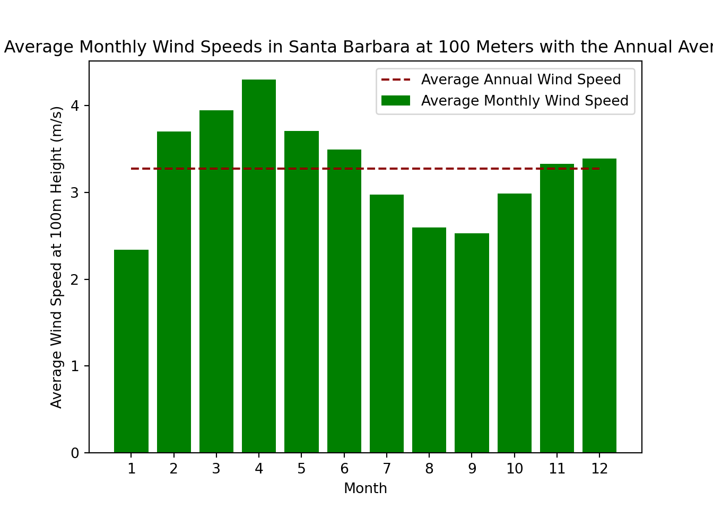

Code
import numpy as np
import pandas as pd
import dateutil
import matplotlib.pyplot as plt
import matplotlib.image as mpimg
from scipy.spatial import cKDTree
import h5pyd
import h5pyWind resource varies highly across space and at different temporal scales, e.g., sub-hourly, diurnal, monthly, and annual. Understanding this variability is crucial for many wind energy modeling applications. Develop a prototype analysis tool that examines wind speed variability at diurnal and monthly temporal scales at an individual location of your choosing. Use NREL’s WIND Toolkit (WTK) data set (see below) to examine hourly (60-minute interval) wind speed data for the year 2012. Use only open-source tools. Develop statistical summaries and simple visualizations that will inform the user on the wind speed variability across diurnal and monthly scales. Your solution should provide location-specific summaries but should also be developed in an extensible manner such that it could be scaled in the future to run efficiently across broad geographic extents (utilizing an HPC system or the cloud). Prepare a 15-minute section of your interview presentation on your solution and demonstrate the insight it provides. Discuss how your approach could be scaled and extended to examine temporal variability across space.
import numpy as np
import pandas as pd
import dateutil
import matplotlib.pyplot as plt
import matplotlib.image as mpimg
from scipy.spatial import cKDTree
import h5pyd
import h5pyData was downloaded following the instructions provided in the instruction email: https://github.com/NREL/hsds-examples/blob/master/notebooks/02_WTK_Domains_introduction.ipynb
For this to work you must first install h5pyd:
pip install --user h5pyd
Next you’ll need to configure HSDS:
hsconfigure
and enter at the prompt:
hs_endpoint = https://developer.nrel.gov/api/hsds hs_username = None hs_password = None hs_api_key = 3K3JQbjZmWctY0xmIfSYvYgtIcM3CN0cb1Y2w9bf
The example API key here is for demonstration and is rate-limited per IP. To get your own API key, visit []https://developer.nrel.gov/signup/
Let’s import the data for the year 2012 and for the contiguous US.
year = '2012'
country = "conus" #
wind_file_path = "/nrel/wtk/conus/wtk_" + country + "_" + year + ".h5"
raw_h5 = h5pyd.File(wind_file_path, 'r')
list(raw_h5)['coordinates', 'inversemoninobukhovlength_2m', 'meta', 'precipitationrate_0m', 'pressure_0m', 'pressure_100m', 'pressure_200m', 'relativehumidity_2m', 'temperature_100m', 'temperature_10m', 'temperature_120m', 'temperature_140m', 'temperature_160m', 'temperature_200m', 'temperature_2m', 'temperature_40m', 'temperature_60m', 'temperature_80m', 'time_index', 'winddirection_100m', 'winddirection_10m', 'winddirection_120m', 'winddirection_140m', 'winddirection_160m', 'winddirection_200m', 'winddirection_40m', 'winddirection_60m', 'winddirection_80m', 'windspeed_100m', 'windspeed_10m', 'windspeed_120m', 'windspeed_140m', 'windspeed_160m', 'windspeed_200m', 'windspeed_40m', 'windspeed_60m', 'windspeed_80m']The below chunk takes a look at the data dimensions. Understanding the dimensions is critical to working with .h5 files as the index numbers are what ties the separate data structures together.
raw_h5['coordinates']<HDF5 dataset "coordinates": shape (2488136, 2), type "<f4">raw_h5['meta']<HDF5 dataset "meta": shape (2488136,), type "|V69">raw_h5['windspeed_100m']<HDF5 dataset "windspeed_100m": shape (8784, 2488136), type "<u2">raw_h5['time_index']<HDF5 dataset "time_index": shape (8784,), type "|S20">So with the dimensions above we can interpret that there are almost 2.5 million coordinate points and 8,784 time points. We can then extract the wind speed at a specific time and place during the year.
Next we will pull out the time index data and make it more friendly for python to work with.The time data is hourly for every day of the year.
time_index = pd.to_datetime(raw_h5['time_index'][...].astype(str)) #save timestamp index as object in date time format
time_indexDatetimeIndex(['2012-01-01 00:00:00', '2012-01-01 01:00:00',
'2012-01-01 02:00:00', '2012-01-01 03:00:00',
'2012-01-01 04:00:00', '2012-01-01 05:00:00',
'2012-01-01 06:00:00', '2012-01-01 07:00:00',
'2012-01-01 08:00:00', '2012-01-01 09:00:00',
...
'2012-12-31 14:00:00', '2012-12-31 15:00:00',
'2012-12-31 16:00:00', '2012-12-31 17:00:00',
'2012-12-31 18:00:00', '2012-12-31 19:00:00',
'2012-12-31 20:00:00', '2012-12-31 21:00:00',
'2012-12-31 22:00:00', '2012-12-31 23:00:00'],
dtype='datetime64[ns]', length=8784, freq=None)time_df = pd.DataFrame(data = time_index, columns = ['date_time']) # save as pandas DF to use later.
# datetimeIndex has each our of the day storedNext the meta data is saved. This will not be used for this model but it is helpful to understand what kind of data is embedded in the file.
meta = pd.DataFrame(raw_h5['meta'][...]) #save meta data as object, ellipses makes it an array rather than HDF5
meta.head() # just used to look at the data more easily
# This has latitude and longitude columns that can be used to search for other information where necessary and if needed latitude longitude country ... timezone elevation offshore
0 37.603382 -127.617050 b'None' ... -9 0 1
1 37.620419 -127.626007 b'None' ... -9 0 1
2 37.637451 -127.634979 b'None' ... -9 0 1
3 37.654484 -127.643951 b'None' ... -9 0 1
4 37.671509 -127.652924 b'None' ... -9 0 1
[5 rows x 8 columns]coords = raw_h5['coordinates'][...] # save coordinates data as array, ellipses makes it an array rather than HDF5
coords_df = pd.DataFrame(data = coords)
coords_df.columns = ['latitude', 'longitude']The function nearest_site, allows you to find the index numbers within a coord_array for a given latitude (lat_coord) and longitude (lon_coord) coordinate. The returned index numbers will allow you to find the wind speed for the point of interest in the .h5 file.
# The function below l
def nearest_site(coord_array, lat_coord, lon_coord):
tree = cKDTree(coord_array)
lat_lon = np.array([lat_coord, lon_coord])
dist, pos = tree.query(lat_lon)
return pos;The below is a test for the function above for the point of interest (POI). The coordinates used in this example are for Santa Barbara, California. We are making the coords object the same as above here but it is included so that it is more obvious where things are coming from in the function call.
coords = raw_h5['coordinates'][...] # save coordinates data as array, ellipses makes it an array rather than HDF5
POI = (34.420830, -119.698189)
POI_indx = nearest_site(coord_array = coords,
lat_coord = POI[0],
lon_coord = POI[1])
POI_indx209886POI_indxFor this example we will be using the data for windspeed_100m from the raw_h5 extracted at the beginning of the demo. The list of available data is above under the call list(raw_h5). Next the wind speed is extracted from the h5 for all time rows in the designated year at the specific location indicated by the index. It is unscaled by the scale_factor of 100 so that the resulting values represent m/s.
# def h5_extractor(raw_h5, variable,)
windspeed_100_raw = raw_h5['windspeed_100m'] # save the h5 separately
windspeed_100_raw = windspeed_100_raw[:, POI_indx] / windspeed_100_raw.attrs['scale_factor'] # Make wind speed array and unscale data so that it is in m/s
windspeed_100 = pd.DataFrame(data = windspeed_100_raw) # make array a DF for the timeseries of interestNext the setup work that has been done above will be made into a more useful data frame so that information can be visualized more easily. This function assumes you have completed the steps above
def windspeed_point_df_maker(time_df, coords_df, windspeed, POI_indx):
df = pd.DataFrame(dtype = float) # making a data frame with default dtype 'float'
df['year'] = time_df['date_time'].dt.year # make a year column
df['month'] = time_df['date_time'].dt.month # make a month column
df['day'] = time_df['date_time'].dt.day # make a day column
df['hour'] = time_df['date_time'].dt.hour # make an hour column
df['latitude'] = coords_df['latitude'].iloc[POI_indx] # get all latitude coords
df['longitude'] = coords_df['longitude'].iloc[POI_indx] # get all longitude coords
df['windspeed'] = windspeed_100 # unscaled windspeeds
df['avg_windspeed'] = df['windspeed'].mean() # find the average windspeed for the whole dataset
return dfNow that we have a function to give us a more usable data frame lets make one for the wind speed at 100 meters data
df_100m = windspeed_point_df_maker(time_df = time_df,
coords_df = coords_df,
windspeed = windspeed_100,
POI_indx = POI_indx)
df_100m.head() year month day hour latitude longitude windspeed avg_windspeed
0 2012 1 1 0 34.414795 -119.702332 1.83 3.270203
1 2012 1 1 1 34.414795 -119.702332 0.62 3.270203
2 2012 1 1 2 34.414795 -119.702332 0.44 3.270203
3 2012 1 1 3 34.414795 -119.702332 0.29 3.270203
4 2012 1 1 4 34.414795 -119.702332 0.13 3.270203The function below, time_subset, will allow the user to group the data into a designated subset by the hour, day, or month. Different functions are completed based on the type of plots one may want to make with the data. This function assumes that the data has been categorized as is done in the windspeed_point_df_maker function.
def time_subset(period, df):
if period == 'hour':
df = df.groupby(['year','month','hour','avg_windspeed'], as_index = False).agg(hour_avg_windspeed = ('windspeed', 'mean'), standard_dev = ('windspeed', 'std'))
elif period == 'day':
df = df.groupby(['year','month','day','avg_windspeed'], as_index = False).agg(daily_avg_windspeed = ('windspeed', 'mean'), standard_dev = ('windspeed', 'std'))
df['date'] = pd.to_datetime(df['year'].astype(str) + '/' +df['month'].astype(str) + '/' + df['day'].astype(str))
elif period == 'month':
df = df.groupby(['month', 'avg_windspeed'], as_index = False).agg(month_avg_windspeed = ('windspeed', 'mean'), standard_dev = ('windspeed', 'std'))
else:
print("Period must be desginated as either hour, day, or month")
return dfNext the data is subset to be made into visualizations. This uses the function just made time_subset above. First lets explore the daily summary to see average wind speed of each day.
day_var = time_subset(period = 'day', df = df_100m)
day_var.head() year month day ... daily_avg_windspeed standard_dev date
0 2012 1 1 ... 0.940833 0.554593 2012-01-01
1 2012 1 2 ... 2.021667 0.985065 2012-01-02
2 2012 1 3 ... 1.599583 1.227679 2012-01-03
3 2012 1 4 ... 1.260833 0.800923 2012-01-04
4 2012 1 5 ... 1.242917 0.814827 2012-01-05
[5 rows x 7 columns]First a histogram is made to understand how daily wind averages are distributed across 2012.
plt.clf()
plt.hist(x = day_var['daily_avg_windspeed'], color = "darkgreen", label = "Average Daily Wind Speed", bins = 12)(array([ 31., 109., 115., 54., 24., 7., 7., 10., 2., 2., 3.,
2.]), array([ 0.94083333, 1.77152778, 2.60222222, 3.43291667, 4.26361111,
5.09430556, 5.925 , 6.75569444, 7.58638889, 8.41708333,
9.24777778, 10.07847222, 10.90916667]), <BarContainer object of 12 artists>)plt.xlabel("Average Wind Speed at 100m Height (m/s)")
plt.ylabel("Count")
plt.title("Average Daily Wind Speeds in Santa Barbara at 100 Meters for 2012")
plt.show()This histogram tells us that that most days of the year have a wind speed averaging less than 5 m/s in Santa Barbara. If we look at how these variations are spread across the year are there any patterns that emerge?
plt.clf()
plt.plot(day_var['date'], day_var['daily_avg_windspeed'], color = "darkgreen", label = "Average Daily Wind Speed")
plt.plot(day_var['date'], day_var['avg_windspeed'], color = "black", label = "Average Annual Wind Speed", linestyle = 'dashed')
plt.xlabel("Day")
plt.ylabel("Average Wind Speed at 100m Height (m/s)")
plt.title("Comparing Average Daily Wind Speeds in Santa Barbara at 100 Meters \n with the Annual Average for 2012")
plt.legend()
plt.show()It looks like the days with the strongest wind throughout the year are in the winter and early months however, there is a lot of variability between the high wind days and the low wind days. It appears that day to day wind variation is low from June-October. How does this look if we simplify it to month-month?
monthly_var = time_subset(period = 'month', df = df_100m)
monthly_var.head() month avg_windspeed month_avg_windspeed standard_dev
0 1 3.270203 2.339987 1.860377
1 2 3.270203 3.702514 3.598256
2 3 3.270203 3.946653 2.837208
3 4 3.270203 4.295028 3.619121
4 5 3.270203 3.706169 2.218983plt.clf()
plt.bar(monthly_var['month'], monthly_var['month_avg_windspeed'], color = "green", label = "Average Monthly Wind Speed")<BarContainer object of 12 artists>plt.xticks(monthly_var['month'])([<matplotlib.axis.XTick object at 0x290eef610>, <matplotlib.axis.XTick object at 0x290eef850>, <matplotlib.axis.XTick object at 0x290eeb310>, <matplotlib.axis.XTick object at 0x290f395b0>, <matplotlib.axis.XTick object at 0x290f39d00>, <matplotlib.axis.XTick object at 0x290f40490>, <matplotlib.axis.XTick object at 0x290f40be0>, <matplotlib.axis.XTick object at 0x290f45370>, <matplotlib.axis.XTick object at 0x290f45ac0>, <matplotlib.axis.XTick object at 0x290f45760>, <matplotlib.axis.XTick object at 0x290f40730>, <matplotlib.axis.XTick object at 0x290f39640>], [Text(0, 0, ''), Text(0, 0, ''), Text(0, 0, ''), Text(0, 0, ''), Text(0, 0, ''), Text(0, 0, ''), Text(0, 0, ''), Text(0, 0, ''), Text(0, 0, ''), Text(0, 0, ''), Text(0, 0, ''), Text(0, 0, '')])plt.plot(monthly_var['month'], monthly_var['avg_windspeed'], color = "darkred", linestyle = 'dashed', label = "Average Annual Wind Speed")
# plt.scatter(monthly_var['month'], monthly_var['month_avg_windspeed'] + monthly_var['standard_dev'], color = "grey", linestyle = 'dashed', label = "Monthly Standard Deviation")
# plt.scatter(monthly_var['month'], monthly_var['month_avg_windspeed'] - monthly_var['standard_dev'], color = "grey", linestyle = 'dashed')
plt.xlabel("Month")
plt.ylabel("Average Wind Speed at 100m Height (m/s)")
plt.title("Comparing Average Monthly Wind Speeds in Santa Barbara at 100 Meters with the Annual Average for 2012")
plt.legend()
plt.show()
This confirms our observations for the day-to-day variation of wind speed for the year. The winter and early spring months are the windier months, while July-October have lower wind on average. What about the standard deviation for each month?
plt.clf()
plt.bar(monthly_var['month'], monthly_var['month_avg_windspeed'], color = "green", label = "Average Monthly Wind Speed")<BarContainer object of 12 artists>plt.xticks(monthly_var['month'])([<matplotlib.axis.XTick object at 0x290f398e0>, <matplotlib.axis.XTick object at 0x290f39e20>, <matplotlib.axis.XTick object at 0x290f40fd0>, <matplotlib.axis.XTick object at 0x290f5c820>, <matplotlib.axis.XTick object at 0x290f63040>, <matplotlib.axis.XTick object at 0x290f63700>, <matplotlib.axis.XTick object at 0x290f636d0>, <matplotlib.axis.XTick object at 0x290f63d30>, <matplotlib.axis.XTick object at 0x290f6a4c0>, <matplotlib.axis.XTick object at 0x290f6ac10>, <matplotlib.axis.XTick object at 0x290f6d3a0>, <matplotlib.axis.XTick object at 0x290f6daf0>], [Text(0, 0, ''), Text(0, 0, ''), Text(0, 0, ''), Text(0, 0, ''), Text(0, 0, ''), Text(0, 0, ''), Text(0, 0, ''), Text(0, 0, ''), Text(0, 0, ''), Text(0, 0, ''), Text(0, 0, ''), Text(0, 0, '')])plt.scatter(monthly_var['month'], monthly_var['month_avg_windspeed'] + monthly_var['standard_dev'], color = "grey", linestyle = 'dashed', label = "Monthly Standard Deviation")
plt.scatter(monthly_var['month'], monthly_var['month_avg_windspeed'] - monthly_var['standard_dev'], color = "grey", linestyle = 'dashed')
plt.xlabel("Month")
plt.ylabel("Average Wind Speed at 100m Height (m/s)")
plt.title("Comparing Average Monthly Wind Speeds in Santa Barbara at 100 Meters with the \n Standard Deviation in 2012")
plt.legend()
plt.show()Including the standard deviations in this plot show us the variability of wind in that particular month in much greater detail. So in February, you can have days with more extreme winds but you can also have days with practically no wind. Whereas in July you have a lower average wind speed, but it is less variable throughout the month. What if we wanted to look how wind speed varies for the hours in a day for a particular month?
hourly_var = time_subset(period = 'hour', df = df_100m)
hourly_var.head() year month hour avg_windspeed hour_avg_windspeed standard_dev
0 2012 1 0 3.270203 2.633871 1.946564
1 2012 1 1 3.270203 2.544516 2.137604
2 2012 1 2 3.270203 2.265484 1.951186
3 2012 1 3 3.270203 2.185484 1.588781
4 2012 1 4 3.270203 1.888710 1.253342Since we know July has less variation than other months lets take a look there first
july_var = hourly_var[hourly_var['month'] == 7]
plt.clf()
plt.bar(july_var['hour'], july_var['hour_avg_windspeed'], label = "Hourly Daily Wind Speed", color = "green")<BarContainer object of 24 artists>plt.xticks(july_var['hour'])([<matplotlib.axis.XTick object at 0x290f63b50>, <matplotlib.axis.XTick object at 0x290f630a0>, <matplotlib.axis.XTick object at 0x290f6a370>, <matplotlib.axis.XTick object at 0x290fe83d0>, <matplotlib.axis.XTick object at 0x290fe8b20>, <matplotlib.axis.XTick object at 0x290fee2b0>, <matplotlib.axis.XTick object at 0x290feea00>, <matplotlib.axis.XTick object at 0x290fe8a90>, <matplotlib.axis.XTick object at 0x290fee520>, <matplotlib.axis.XTick object at 0x290ff54f0>, <matplotlib.axis.XTick object at 0x290ff5c40>, <matplotlib.axis.XTick object at 0x290ffa3d0>, <matplotlib.axis.XTick object at 0x290ffab20>, <matplotlib.axis.XTick object at 0x290fff2b0>, <matplotlib.axis.XTick object at 0x290ffa790>, <matplotlib.axis.XTick object at 0x290ff5520>, <matplotlib.axis.XTick object at 0x290fff040>, <matplotlib.axis.XTick object at 0x290fffdf0>, <matplotlib.axis.XTick object at 0x291a4d580>, <matplotlib.axis.XTick object at 0x291a4dcd0>, <matplotlib.axis.XTick object at 0x291a54460>, <matplotlib.axis.XTick object at 0x291a4d850>, <matplotlib.axis.XTick object at 0x290ff5460>, <matplotlib.axis.XTick object at 0x291a541c0>], [Text(0, 0, ''), Text(0, 0, ''), Text(0, 0, ''), Text(0, 0, ''), Text(0, 0, ''), Text(0, 0, ''), Text(0, 0, ''), Text(0, 0, ''), Text(0, 0, ''), Text(0, 0, ''), Text(0, 0, ''), Text(0, 0, ''), Text(0, 0, ''), Text(0, 0, ''), Text(0, 0, ''), Text(0, 0, ''), Text(0, 0, ''), Text(0, 0, ''), Text(0, 0, ''), Text(0, 0, ''), Text(0, 0, ''), Text(0, 0, ''), Text(0, 0, ''), Text(0, 0, '')])plt.xlabel("Hour of Day")
plt.ylabel("Average Wind Speed at 100m Height (m/s)")
plt.title("Average Hourly Wind Speeds for July in Santa Barbara at 100 Meters in 2012")
#plt.legend()
plt.show()march_var = hourly_var[hourly_var['month'] == 3]
plt.clf()
plt.bar(march_var['hour'], march_var['hour_avg_windspeed'], label = "Hourly Daily Wind Speed", color = "green")<BarContainer object of 24 artists>plt.xticks(march_var['hour'])([<matplotlib.axis.XTick object at 0x290fe8e20>, <matplotlib.axis.XTick object at 0x290fe8fa0>, <matplotlib.axis.XTick object at 0x290fee970>, <matplotlib.axis.XTick object at 0x291a9f850>, <matplotlib.axis.XTick object at 0x291aa5070>, <matplotlib.axis.XTick object at 0x291aa5760>, <matplotlib.axis.XTick object at 0x291aab040>, <matplotlib.axis.XTick object at 0x291aab640>, <matplotlib.axis.XTick object at 0x291aabd90>, <matplotlib.axis.XTick object at 0x291aab730>, <matplotlib.axis.XTick object at 0x290f63c10>, <matplotlib.axis.XTick object at 0x291aae2e0>, <matplotlib.axis.XTick object at 0x291aaea30>, <matplotlib.axis.XTick object at 0x291ab71c0>, <matplotlib.axis.XTick object at 0x291ab7910>, <matplotlib.axis.XTick object at 0x291aba0a0>, <matplotlib.axis.XTick object at 0x291ab76a0>, <matplotlib.axis.XTick object at 0x291a9f880>, <matplotlib.axis.XTick object at 0x291aba4f0>, <matplotlib.axis.XTick object at 0x291abab50>, <matplotlib.axis.XTick object at 0x291ac62e0>, <matplotlib.axis.XTick object at 0x291ac6a30>, <matplotlib.axis.XTick object at 0x291acb1c0>, <matplotlib.axis.XTick object at 0x291ac67f0>], [Text(0, 0, ''), Text(0, 0, ''), Text(0, 0, ''), Text(0, 0, ''), Text(0, 0, ''), Text(0, 0, ''), Text(0, 0, ''), Text(0, 0, ''), Text(0, 0, ''), Text(0, 0, ''), Text(0, 0, ''), Text(0, 0, ''), Text(0, 0, ''), Text(0, 0, ''), Text(0, 0, ''), Text(0, 0, ''), Text(0, 0, ''), Text(0, 0, ''), Text(0, 0, ''), Text(0, 0, ''), Text(0, 0, ''), Text(0, 0, ''), Text(0, 0, ''), Text(0, 0, '')])plt.xlabel("Hour of Day")
plt.ylabel("Average Wind Speed at 100m Height (m/s)")
plt.title("Average Hourly Wind Speeds for March in Santa Barbara at 100 Meters in 2012")
plt.show()import numpy
numpy.version.version'1.23.1'With the above code we are able to look at wind speed variation at a specific point for a given year at different heights. It is also possible to use the resulting data frames to visualize these variations. The below tries to expand the work done above to be able to compare multiple points from a data frame.
The function below, multiple_site_index, works with the nearest_site function above to work with multiple coordinate points rather than one location. The function assumes that the data frame’s first column is “lat” and the second column is “lon”.
def multiple_site_index(POI_df, coord_array):
POI_df.columns = ['lat', 'lon']
results = []
for ind in POI_df.index:
lat = POI_df['lat'][ind]
lon = POI_df['lon'][ind]
POI_indx = nearest_site(coord_array, lat, lon)
results.append(POI_indx)
return resultscoords = raw_h5['coordinates'][...] # save coordinates data as array, ellipses makes it an array rather than HDF5
POI_df_test = coords_df.head()
POI_multi = multiple_site_index(POI_df = POI_df_test, coord_array = coords)
POI_multi[0, 1, 2, 3, 4]coords = raw_h5['coordinates'][...] # save coordinates data as array, ellipses makes it an array rather than HDF5
coords_df = pd.DataFrame(data = coords)
coords_df.columns = ['latitude', 'longitude']
# coords_df = coords_df.astype(float)
# find the max and min of the dataset to create bounding limits
lat_max = coords_df['latitude'].max()
lat_min = coords_df['latitude'].min()
long_max = coords_df['longitude'].max()
long_min = coords_df['longitude'].min()
type(long_min)<class 'numpy.float32'>renv::snapshot()* Lockfile written to '~/Documents/Jobs/NREL/NREL_task_2022/renv.lock'.
* Wrote Python packages to "~/Documents/Jobs/NREL/NREL_task_2022/requirements.txt".renv::restore()* The library is already synchronized with the lockfile.
* The Python library is already up to date.